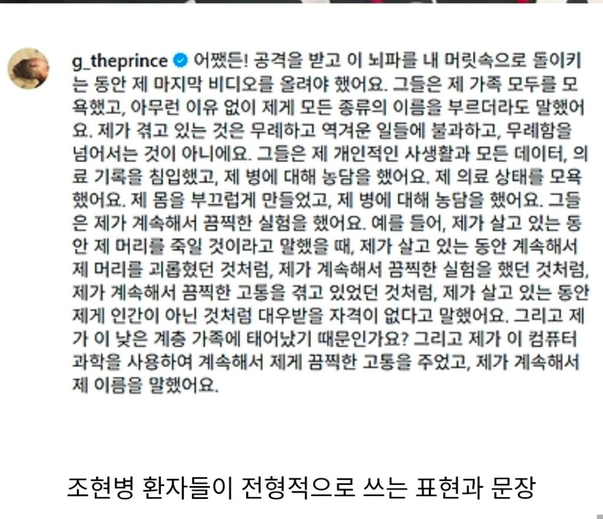

0 · 6 · · 원문

가수 지소울
수집 당시 댓글 6개
최고의맥주부드바르 · 4 일 전
무섭네 나이 30대 중후반에도 조현병이 오나?
구스타프무하 · 4 일 전
심한 스트레스 + 유전 이면 가능하지.. 유전이라고해서 부모가 생겼다고 자식도 꼭 생기는건 아니지만
Jawoll · 3 일 전
조현병은 노화와 관련된게 아니니까
삐응삐앙 · 4 일 전
여자 조현병이랑 남자 조현병이랑 살짝 다르더라
기분좋은향기나는모코코 · 3 일 전
조현병 기본 레퍼토리 : 누가 날 감시하는것 같음, 누가 나한테 전파를 쏜다, 가스냄새가 난다 등...
이메일주소오타 · 3 일 전
https://youtube.com/shorts/qUaRBTQVAGw?si=8Xp5710rQThHjapT 지소율 노래 잘부르네 ㅠ
댓글
수집 당시 댓글 6개
최고의맥주부드바르 · 4 일 전
무섭네 나이 30대 중후반에도 조현병이 오나?
구스타프무하 · 4 일 전
심한 스트레스 + 유전 이면 가능하지.. 유전이라고해서 부모가 생겼다고 자식도 꼭 생기는건 아니지만
Jawoll · 3 일 전
조현병은 노화와 관련된게 아니니까
삐응삐앙 · 4 일 전
여자 조현병이랑 남자 조현병이랑 살짝 다르더라
기분좋은향기나는모코코 · 3 일 전
조현병 기본 레퍼토리 : 누가 날 감시하는것 같음, 누가 나한테 전파를 쏜다, 가스냄새가 난다 등...
이메일주소오타 · 3 일 전
https://youtube.com/shorts/qUaRBTQVAGw?si=8Xp5710rQThHjapT 지소율 노래 잘부르네 ㅠ